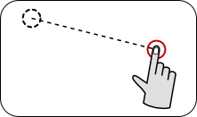

QSwipeGesture Class
The QSwipeGesture class describes a swipe gesture made by the user. More...
| Header: | #include <QSwipeGesture> |
| qmake: | QT += widgets |
| Since: | Qt 4.6 |
| Inherits: | QGesture. |
Public Types
| enum | SwipeDirection { NoDirection, Left, Right, Up, Down } |
Properties
- horizontalDirection : const SwipeDirection
- swipeAngle : qreal
- verticalDirection : const SwipeDirection
Public Functions
| ~QSwipeGesture() | |
| SwipeDirection | horizontalDirection() const |
| void | setSwipeAngle(qreal value) |
| qreal | swipeAngle() const |
| SwipeDirection | verticalDirection() const |
Additional Inherited Members
- 1 public slot inherited from QObject
- 2 signals inherited from QObject
- 1 public variable inherited from QObject
- 10 static public members inherited from QObject
- 9 protected functions inherited from QObject
- 2 protected variables inherited from QObject
Detailed Description
The QSwipeGesture class describes a swipe gesture made by the user.

For an overview of gesture handling in Qt and information on using gestures in your applications, see the Gestures in Widgets and Graphics View document.
See also QPanGesture and QPinchGesture.
Member Type Documentation
enum QSwipeGesture::SwipeDirection
This enum describes the possible directions for the gesture's motion along the horizontal and vertical axes.
| Constant | Value | Description |
|---|---|---|
| QSwipeGesture::NoDirection | 0 | The gesture had no motion associated with it on a particular axis. |
| QSwipeGesture::Left | 1 | The gesture involved a horizontal motion to the left. |
| QSwipeGesture::Right | 2 | The gesture involved a horizontal motion to the right. |
| QSwipeGesture::Up | 3 | The gesture involved an upward vertical motion. |
| QSwipeGesture::Down | 4 | The gesture involved a downward vertical motion. |
Property Documentation
horizontalDirection : const SwipeDirection
This property holds the horizontal direction of the gesture.
If the gesture has a horizontal component, the horizontal direction is either Left or Right; otherwise, it is NoDirection.
Access functions:
| SwipeDirection | horizontalDirection() const |
See also verticalDirection and swipeAngle.
swipeAngle : qreal
This property holds the angle of the motion associated with the gesture.
If the gesture has either a horizontal or vertical component, the swipe angle describes the angle between the direction of motion and the x-axis as defined using the standard widget coordinate system.
Access functions:
| qreal | swipeAngle() const |
| void | setSwipeAngle(qreal value) |
See also horizontalDirection and verticalDirection.
verticalDirection : const SwipeDirection
This property holds the vertical direction of the gesture.
If the gesture has a vertical component, the vertical direction is either Up or Down; otherwise, it is NoDirection.
Access functions:
| SwipeDirection | verticalDirection() const |
See also horizontalDirection and swipeAngle.